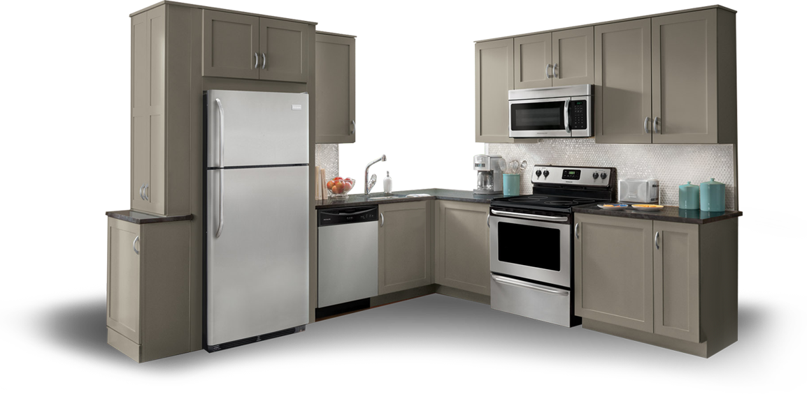
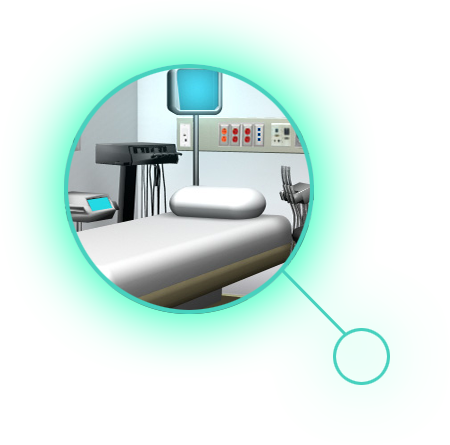

On-Demand Quality Inspection Data
Responsiveness is critical in today’s quality-driven manufacturing environments. Unchecked quality issues can result in excessive scrap, customer complaints, and lost contracts. Highly configurable Signalysis INSIGHT puts critical data at your fingertips for fast, informed decision-making.
INSIGHT connects your SigQC-driven systems for a tightly integrated quality inspection environment. With the ability to simultaneously monitor, track, and report on production unit failure rates and test system performance, INSIGHT alerts users to problems and provides the data and visibility to identify the cause and take quick decisive action.

Appliances
When household appliances aren’t meeting quality standards, excessive warranty costs and lost market share are the results. Our end-of-line test systems help manufacturers identify and eliminate quality problems before they reach the consumer.
SigQC™
Production Test Software Automated PASS-FAIL Testing
SigQC analyzes components, subassemblies and products to determine, in real-time, if quality goals are met. The system can be integrated into existing manufacturing lines providing a completely automated PASS-FAIL inspection solution. Flexible and scalable, SIGQC adapts to meet your current and future production and laboratory applications.

Medical
Medical and dental equipment ranges in size from the smallest surgical instruments to large scanning equipment. Signalysis designs end-of-line test systems to help ensure quality and dependability where it counts the most.